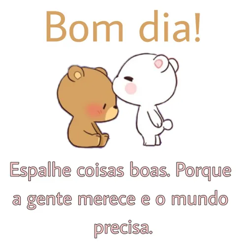
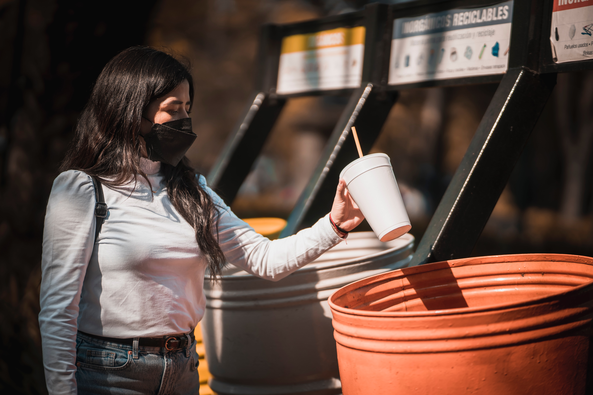
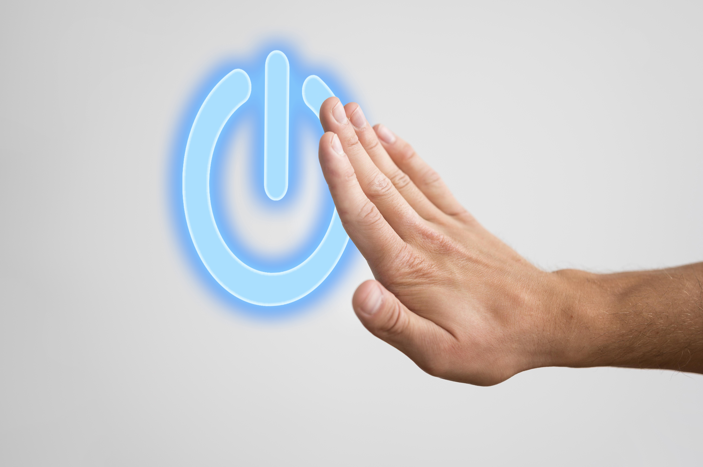

Só através da Educação poderemos ter um mundo melhor e consequentemente um futuro melhor.
É através da Educação que vamos evoluir como seres humanos, aprendendo a cuidar de nós mesmos, dos outros e do nosso planeta.
É um processo lento e nada fácil, mas necessário para todos.E não estamos falando somente daquilo que aprendemos na escola,
mas sim em todos os aspectos de nossas vidas, aquele bom dia, boa tarde, me desculpe, com licença, etc.. que deveríamos aprender
em casa com nossos pais, mas muitas vezes até isso se perdeu.
A Educação é a base para todos os ODSs(Objetivos de Desenvolvimento Sustentável), é através de professores, voluntários,familiares,
pessoas em geral que podemos aprener e compartilhar conhecimento.
Todas as pessoas possuem algum conhecimento que podem transmitir.
A solução para isso não é fácil e passa por todos os setores da sociedade, podemos começar por nossa casa:
Dar bom dia ao próximo
Reciclar nosso lixo
Economize energia
Em 2014, foi aprovado o Plano Nacional de Educação (PNE), que abrange o que foi estabelecido por esse ODS, de forma adaptada à realidade nacional. Além disso, a oportunidade de acesso à educação básica foi incluída na Constituição Federal brasileira em 2009 pela emenda número 59, estabelecendo o direito de todos à educação. Diversas outras medidas têm sido tomadas no âmbito federal e local, mas mesmo assim, sabe-se que o Brasil, assim como outros países, ainda está longe de possuir uma educação acessível de qualidade para todos seus cidadãos.
Ainda há muito o que ser feito para que todo ser humano receba uma educação de qualidade, livre de desigualdades e de forma acessível. Por isso, é essencial que até 2030, governos, instituições e os próprios cidadãos se empenhem na tarefa de promover esse direito da forma mais abrangente possível; qualificando professores, universalizando o acesso à educação, fornecendo a infraestrutura necessária e incentivando a formação do aluno como profissional e como cidadão. Dessa forma, diversos outros poderão deixar de ser limitados, uma vez que a educação é a base para outras garantias. Como Malala Yousafzai disse em uma conferência das Nações Unidas: “Uma criança, um professor, um livro e uma caneta podem mudar o mundo. A educação é a única solução”.
Ana Cristina
Futura DEV. Gosto de aventuras, alegre e sempre procurando amanhã ser melhor do que hoje.
techwek.com
Foto de Julio Lopez na Unsplash
Imagem de Freepik